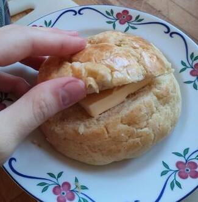

Ananasbulle (Pineapple bun)
Originating in Hong Kong, this sweet bun is often served with a slice of butter. This recipe is for the traditional version.

Figure 3: Finished pineapple buns.

Figure 4: Pineapple bun served with butter and milk.
Ingredients
Makes ~14 buns
Dough:
- Tangzhong
- 10 dl wheat flour
- 0.6 dl milk
- 0.9 dl cream
- 2 eggs
- 0.9 dl sugar
Bun-topping:
- 1 tbsp vanilla extract
- 1 (big) egg
- 4.2 dl wheat flour
- 1 tbsp baking-powder
- 2 dl powdered sugar
- 145g melted butter
Instructions for dough
- Mix dough for 2 mins. Add 50g butter once it takes shape.
- Mix on high 4–8 mins until smooth.
- Let rest 45 mins in a buttered bowl.
Instructions for topping
- Mix egg, vanilla, butter, sugar.
- Add flour and baking powder.
- Let cool 15 mins.
Instructions for baking

Figure 5: Dough balls that bake into full-size buns.
- Preheat oven to 190°C.
- Form dough into balls.
- Make topping pancakes and place on dough balls.
- Bake 15 minutes.